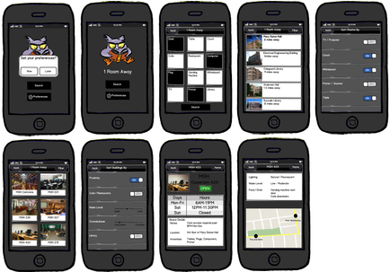

Draft 4 was the final draft of our prototypes. Because of Lucidchart's inflexibility we went back to using Balsamiq. The more sketch-like nature of the Balsamic wireframes also better conveyed our ideas and encouraged less pixel-perfect behaviours. Because David was the only one with access to this program, he made the wireframes once again. Below are the final wireframes.
